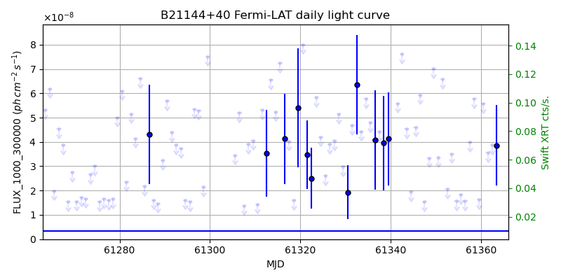
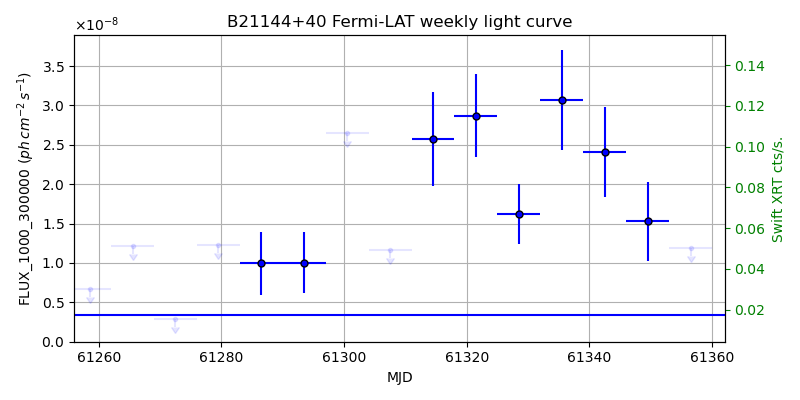

LAT Lightcurve site: https://fermi.gsfc.nasa.gov/ssc/data/access/lat/msl_lc/source/B2_1144p40
Swift site: https://www.swift.psu.edu/monitoring/source.php?source=B21144+40
NED: Query
Time of last update of this page: UT: 2026-11-20 16:23 (MJD: 61364.683)
| Property | Value |
|---|---|
| R.A. | 11:46:58.32 |
| Dec. | 39:58:33.6 |
| z | 1.088 |
| 3FGL SpectrumType | PowerLaw |
| 3FGL PL Index | 2.32 |
| 3FGL Flux_100_300000 | 7.00e-08 1 / (s cm2) |
| 3FGL Flux_1000_300000 | 3.34e-09 1 / (s cm2) |
| 3FGL Flux >200 GeV | 3.05e-12 1 / (s cm2) |
| 3FGL Extrap. Crab >200 GeV | 0.01 |
| 3FGL Flux After EBL Absorption >200GeV | 3.00e-14 1 / (s cm2) |
| 3FGL EBL Crab Fraction >200GeV | 0.00 |
| MJD | dMJD | Flux | dFlux | Frac3FGL | FracCrab>200GeV | EBLFracCrab>200GeV |
|---|---|---|---|---|---|---|
| 61359.50 | 0.50 | 6.05e-07 | 0.00e+00 | 0.00 | 0.00 | 0.00 |
| 61360.50 | 0.50 | 6.34e-07 | 1.68e-07 | 9.06 | 0.12 | 0.00 |
| 61361.50 | 0.50 | 7.78e-07 | 0.00e+00 | 0.00 | 0.00 | 0.00 |
| 61362.50 | 0.50 | 4.26e-07 | 5.64e-08 | 6.09 | 0.08 | 0.00 |
| 61363.50 | 0.50 | 6.60e-07 | 1.33e-07 | 9.43 | 0.12 | 0.00 |

| MJD | dMJD | Flux | dFlux | Frac3FGL | FracCrab>200GeV | EBLFracCrab>200GeV |
|---|---|---|---|---|---|---|
| 61328.50 | 3.50 | 3.89e-07 | 4.13e-08 | 5.56 | 0.07 | 0.00 |
| 61335.50 | 3.50 | 5.16e-07 | 5.78e-08 | 7.38 | 0.10 | 0.00 |
| 61342.50 | 3.50 | 4.08e-07 | 4.96e-08 | 5.83 | 0.08 | 0.00 |
| 61349.50 | 3.50 | 4.71e-07 | 5.76e-08 | 6.74 | 0.09 | 0.00 |
| 61356.50 | 3.50 | 2.90e-07 | 3.20e-08 | 4.15 | 0.05 | 0.00 |

| MJD | dMJD | Flux | dFlux | Frac3FGL | FracCrab>200GeV | EBLFracCrab>200GeV |
|---|---|---|---|---|---|---|
| 61359.50 | 0.50 | 1.62e-08 | 0.00e+00 | 0.00 | 0.00 | 0.00 |
| 61360.50 | 0.50 | 5.57e-08 | 0.00e+00 | 0.00 | 0.00 | 0.00 |
| 61361.50 | 0.50 | 3.56e-08 | 0.00e+00 | 0.00 | 0.00 | 0.00 |
| 61362.50 | 0.50 | 3.88e-08 | 0.00e+00 | 0.00 | 0.00 | 0.00 |
| 61363.50 | 0.50 | 3.86e-08 | 1.65e-08 | 11.58 | 0.15 | 0.00 |

| MJD | dMJD | Flux | dFlux | Frac3FGL | FracCrab>200GeV | EBLFracCrab>200GeV |
|---|---|---|---|---|---|---|
| 61328.50 | 3.50 | 1.62e-08 | 3.75e-09 | 4.87 | 0.06 | 0.00 |
| 61335.50 | 3.50 | 3.07e-08 | 6.36e-09 | 9.21 | 0.12 | 0.00 |
| 61342.50 | 3.50 | 2.41e-08 | 5.71e-09 | 7.22 | 0.09 | 0.00 |
| 61349.50 | 3.50 | 1.53e-08 | 5.02e-09 | 4.59 | 0.06 | 0.00 |
| 61356.50 | 3.50 | 1.19e-08 | 0.00e+00 | 0.00 | 0.00 | 0.00 |
--------------------------------------------------------- Using user-supplied coords: 11:46:58.32 39:58:33.6 2000 --------------------------------------------------------- FLWO UT night of: 2026-11-21 Local Sid. @ Midnight: 03:37 Sunset (-15.0) (local, UT): 18:33 01:33 Sunrise (-15.0) (local, UT): 05:47 12:47 Moonrise (local, UT): Moonset (local, UT): 03:40 10:40 Moon phase: 0.85 --------------------------------------------------------- AzTime LSID UT Obj_el Obj_az Mn_el Mn_az Sep. --------------------------------------------------------- 18:33 22:09 01:33 -14.9 340.5 47.9 117.4 131.6 19:03 22:39 02:03 -16.7 346.2 53.3 125.0 131.4 19:33 23:09 02:33 -17.9 352.1 58.2 134.7 131.3 20:03 23:39 03:03 -18.5 358.2 62.3 146.9 131.1 20:33 00:09 03:33 -18.3 4.2 65.1 162.1 130.9 21:03 00:39 04:03 -17.5 10.3 66.3 179.7 130.8 21:33 01:09 04:33 -16.1 16.1 65.4 197.5 130.6 22:03 01:39 05:03 -14.0 21.7 62.9 213.2 130.5 22:33 02:09 05:33 -11.4 26.9 59.0 225.9 130.3 23:03 02:39 06:03 -8.2 31.9 54.2 235.9 130.1 23:33 03:09 06:33 -3.3 36.4 48.9 243.9 130.0 00:03 03:39 07:03 -0.1 40.6 43.2 250.4 129.8 00:33 04:10 07:33 3.9 44.4 37.3 255.9 129.7 01:03 04:40 08:03 8.4 47.9 31.2 260.7 129.5 01:33 05:10 08:33 13.2 51.1 25.1 265.1 129.4 02:03 05:40 09:03 18.3 53.9 19.0 269.2 129.2 02:33 06:10 09:33 23.5 56.5 12.9 273.0 129.0 03:03 06:40 10:03 28.9 58.7 6.8 276.9 128.9 03:33 07:10 10:33 34.5 60.7 1.0 280.7 128.7 04:03 07:40 11:03 40.1 62.3 -4.9 284.7 128.5 04:33 08:10 11:33 45.8 63.6 -11.1 288.8 128.3 05:03 08:40 12:03 51.5 64.3 -16.8 293.2 128.1 05:33 09:10 12:33 57.3 64.4 -22.3 298.1 128.0 05:47 09:25 12:47 60.1 64.1 -24.8 300.5 127.9 --------------------------------------------------------- Dark hours >55 deg.: 0.44 srcstart (UT): 2026-11-21 12:20 srcend (UT): 2026-11-21 12:46